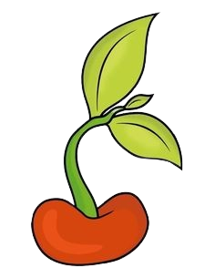
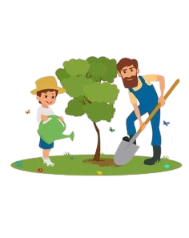
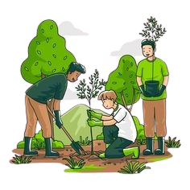

There was a boy named Tim who was raised in a farm. Tim, in his farm wondered how, from a seed a whole plant grew. This made him curious about plants and one day he thought of planting a seed and see how plants grew.He took some seeds and planted them in a flower pot and watered it everyday. Seeing this his father thought of explaining the life cycle of plants
Tim's father said "Growth is the most basic feature of all living organisms, and it is a permanent and irreversible metabolic process. Every living species, whether it is plants, animals, birds, or insects, goes through the process of growth-increasing in size. Plants have the remarkable capacity to grow indefinitely during their cycle of life."
 First phase is seed The life cycle of a plant starts with its seed. It germinates and thrives if the conditions are favorable. For this reason, each variety of plants will have distinct methods of germinating. The embryo of the plant is contained within these seeds.
Second phase is called Germination The germination phase occurs after the seed is at a location where the requirements for its birth are met. These essential ingredients are light, water, and heat, which vary depending on the plant. A few days after germination, the seed’s first radical will appear, expanding and developing like a common root, and the seed’s outer coat will peel away
The third phase is known as Seedling When the plant begins to grow, it is in a stage known as “seedling”, The cotyledons (primordial leaves) are open, and the plumule develops, allowing the plant’s initial leaves to grow.
